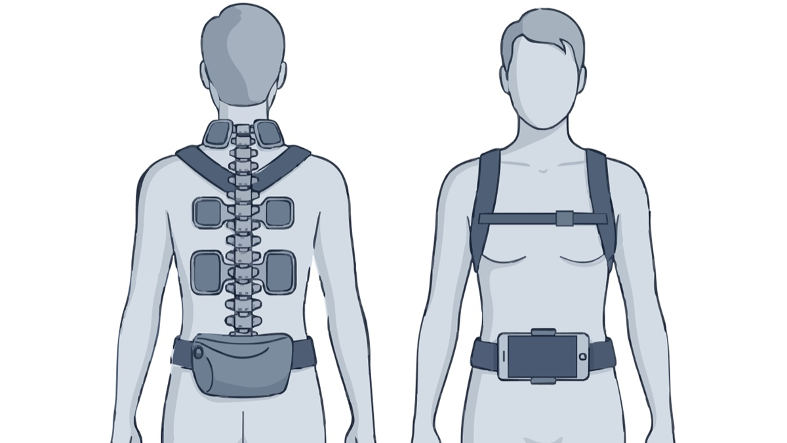

Yili Wen (文怡力)
Graduate Student in Computer Science
The University of Texas at Dallas
Erik Jonsson School of Engineering and Computer Science
Design & Engineering for Making (DE4M) Lab
I'm interested in designing and building wearable and soft-robotic systems that restore and augment human movement. I am drawn to the full loop from human intent to physical assistance, and I work across wearable haptics, embedded sensing, soft actuation, and digital fabrication. My approach is hands-on and human-centered: I prototype real hardware and evaluate it with the people it is built for. Looking ahead, I want to extend my research toward assistive and rehabilitation wearables and exoskeletons, and toward closing the loop between neural intent and adaptive wearable assistance.
Right now I am building two systems. The first is a soft pneumatic grasp-assist exoskeleton that helps people with spinal cord injury regain hand function for everyday tasks, driven by the wearer's own decoded intent. The second is a body-worn haptic wearable that guides blind and low-vision runners through turns without relying on audio, where I study whether cueing the body in a head-to-toe sequence communicates direction more clearly than cueing all at once.
I am advised by Prof. Liang He at the DE4M Lab, UTD.
News
- 2026 Poster "Personas at Play" poster accepted at Graphics Interface (GI) '26.
- 2026 Workshop Presented the soft grasp-assist exoskeleton work ("From Intention to Action") at the Everyday Wearables for Health workshop, CHI '26 in Barcelona.
- 2026 WiP Presented PufFab (Work-in-Progress) at TEI '26!
- 2025 Paper WooGu paper presented at IDC '25.
- 2025 New Joined the DE4M Lab at UT Dallas!
- 2025 Award B.A. from Duke Kunshan University / Duke University.
Selected Projects
View All →
Soft Grasp-Assist Exoskeleton for Spinal Cord Injury
A wearable soft exoskeleton — pneumatic fingers and a jamming wrist band — that restores grasping, driven by the wearer's own decoded intent.

Haptic Wearable for Blind & Low-Vision Runners
A body-worn haptic system that guides blind and low-vision runners through turns without audio.

PufFab: Shape Transformable Rice Paper for Playful Food Fabrication
An interactive design-to-fabrication pipeline utilizing Vietnamese rice paper for customizable edible shape transformation.

WooGu: Enhancing Children's Understanding of Farming through TUI
An educational system integrating tangible user interfaces and embodied interactions with 3D-printed farming tools.

Accessible Adaptive Gaming Controllers
Designing and evaluating DIY accessible game controllers for people with motor disabilities.